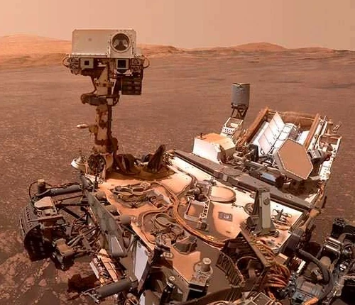

Información
Misiones Espaciales
Sumérgete en las misiones que han marcado la historia de la exploración espacial. Aprende sobre los objetivos, logros y desafíos de cada misión, y cómo han contribuido a expandir nuestro conocimiento del universo.